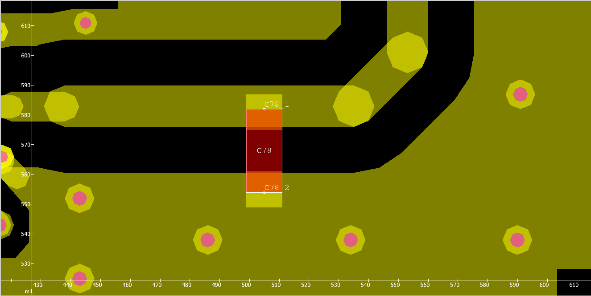
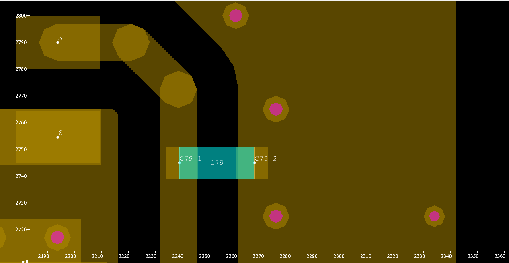

Components and Padstacks¶
When creating components and their padstacks, transformations are used to place them at their intended Position. Affine Transformations can be used to transform any geometry object, and can be used to create local working coordinate systems. Transformations are composed of:
translation
rotation
reflection
scaling
To demonstrate the transformations, two examples are shown below. The first example shows the process of adding a component on the top of a PCB. The second one is similar and shows the process of adding a component on the bottom of the PCB.
To initiate the PCB as usual, we created a helper function that will be used in the following examples.
import cst.interface
from cst.eda import pcb_api
from cst.eda import geometry2d
de = cst.interface.DesignEnvironment.connect_to_any_or_new()
def init_example_pcb():
from pathlib import Path
data_dir = Path(cst.interface.install_paths.root()) / "Online Help" / "PythonTutorial" / "data"
# path to the ECAD file
pcb_file = data_dir / "cst_phone.tgz"
# Create an instance of a PCB
pcb = pcb_api.PCB.convert_from(pcb_file)
return pcb
Creating a Component on the Top Layer¶
In this example, we will create a new component on the top of the PCB and add corresponding padstacks to the top layer.
The following code shows the process.
# Initialize the example pcb
pcb = init_example_pcb()
# BEGIN
# Specify layer and nets
layer = pcb.layer("SIGNAL_1")
net_gnd = pcb.net("GND")
net_c53 = pcb.net("NETC53_1")
# Create a rectangular outline for the component
outline_shape = geometry2d.Shape.create_rectangle((6, 14), (-6, -14))
# Create a new component
component = pcb.create_component("C78")
component.set_outlines([outline_shape])
# Create rectangular pad shape
pad_geometry = geometry2d.Shape.create_rectangle((6, 6), (-6, -6))
# Create padstacks for the defined Nets
gnd_padstack = component.create_padstack(net_gnd)
gnd_padstack.set_pad_geometry(pcb_api.PadType.REGULAR, [pad_geometry], layers=[layer])
c53_padstack = component.create_padstack(net_c53)
c53_padstack.set_pad_geometry(pcb_api.PadType.REGULAR, [pad_geometry], layers=[layer])
# Set transformations for padstacks and transform them
transformation_gnd = geometry2d.translation(0, -13)
gnd_padstack.transform(transformation_gnd)
transformation_c53 = geometry2d.translation(0, 13)
c53_padstack.transform(transformation_c53)
# Define component pins
component.create_pin("C78-1", (0, 14))
component.create_pin("C78-2", (0, -14))
# Transform component to intended position
transform = geometry2d.translation(505, 568)
component.transform(transform)
# Set mount layer of component
component.set_mount_layer(layer)
After initializing the pcb, we initialize the layer that the padstacks will be on as “layer”. We also initialize the two nets “net_gnd” and “net_c53”. The padstacks of the component that we will create will each belong to one of these nets.
Using geometry2d.Shape.create_rectangle((6, 14), (-6, -14)),
we create a rectangular shape and save it as “outline_shape”.
This shape can now be used to create our new component.
We call it “C78” and set its outline to the created “outline_shape”.
The padstacks also need a geometry as outline.
Both padstacks will have the same outline so we only need to create one geometry.
Using the nets that the padstacks should belong to, we crate the two padstacks “gnd_padstack” and “c53_padstack”.
The method set_pad_geometry() needs the type of the padstack as “pcb_api.PadType”, and a list of geometries.
More information to the “pcb_api.PadType” can be found
here.
As we only need one geometry, we pass the created geometry in a list.
The parameter “transformed” is left at its default value, False.
This way the positions of the padstacks are defined relative to the position of the component.
When creating the geometries, we passed the corner points so that the rectangle is created around the point (0,0). To move the padstacks to the proper position, we use a transformation. Transformations are defined and then applied. Here we move the padstacks 13 and -13 along the Y-Axes using a translation.
The component is still missing its pins.
These are created using component.create_pin().
The name and position of the pin is needed in this method.
Finally, the component is translated to the intended position on the PCB, and the “mount_layer” of the component is defined.
Now the Component is imported to a PCB-Studio project.
The created component “C78” and its pins and padstacks can be seen below.

Creating a Component on the Bottom Layer¶
The code below shows the process of creating a component on the bottom layer of the PCB.
# Initialize the example pcb
pcb = init_example_pcb()
# Specify layer and nets
layer = pcb.layer("SIGNAL_2")
net_gnd = pcb.net("GND")
net_c53 = pcb.net("W_RF1")
# Creat a rectangular outline for the component
outline_shape = geometry2d.Shape.create_rectangle((6, 14), (-6, -14))
# Create a new component
component = pcb.create_component("C79")
component.set_outlines([outline_shape])
# Create rectangular outline for padstacks
pad_geometry = geometry2d.Shape.create_rectangle((6, 6), (-6, -6))
# Create padstacks for the defined nets with the pad_geometry
gnd_padstack = component.create_padstack(net_gnd)
gnd_padstack.set_pad_geometry(pcb_api.PadType.REGULAR, [pad_geometry], layers=[layer])
c53_padstack = component.create_padstack(net_c53)
c53_padstack.set_pad_geometry(pcb_api.PadType.REGULAR, [pad_geometry], layers=[layer])
# Create transformations for padstacks and transform them
transformation_gnd = geometry2d.translation(0, -13)
gnd_padstack.transform(transformation_gnd)
transformation_c53 = geometry2d.translation(0, 13)
c53_padstack.transform(transformation_c53)
# Define component pins
component.create_pin("C79-1", (0, 14))
component.create_pin("C79-2", (0, -14))
# Transform the component
translate = geometry2d.translation(2253, 2745)
rotate = geometry2d.rotation(angle_deg=90)
reflect = geometry2d.reflection(flip_x=True)
component.transform(translate @ rotate @ reflect, reset_mount_layer=True)
# Import to a PCB-Studio
prj_2d = de.new_pcbs()
prj_2d.pcbs.set_pcb(pcb)
This Process is similar to the process of creating a component on the top layer.
The difference lies in the transformations at the end.
Due to the position we want to create the component in, we need to create a translation and a rotation.
We also create a reflection to flip the component along the horizontal axis.
Using component.transform() we can use the created translation, rotation and reflection.
The different transformations are concatenated using the “@” symbol.
We also set the “reset_mount_layer” parameter to True.
This puts the component on the bottom layer of the PCB as we flipped the component.
The image below shows the bottom “SIGNAL_2” layer with the bottom components. Here we can see the component “C79” with its padstacks and pins.
